Sarcasm is one of the hardest linguistic phenomena for machines to detect — it requires understanding intent, tone, and context, not just the words themselves. In this project we investigate whether classical machine learning methods, when combined with carefully engineered features, can reliably identify sarcasm across two very different domains: formal news headlines and informal online forum comments. Along the way we uncover a critical data quality problem — source leakage — and show how training on a single-source dataset can fool a model into learning the wrong thing.
When a person says "Oh great, another Monday", the words themselves are positive — but the meaning is negative. Humans understand this instantly through tone, context, and cultural knowledge. Machines, however, only see the text. This makes sarcasm detection a fundamentally challenging natural language processing problem.
Standard sentiment analysis tools like VADER and TextBlob are designed to score the emotional content of words. A sentence packed with positive vocabulary ("great", "amazing", "wonderful") will receive a high positive score — even if the author intended the opposite. This project investigates just how often this happens, and whether machine learning models trained on word patterns and stylistic signals can do better.
We work with two datasets from different domains: formal news headlines (The Onion vs HuffPost) and informal Usenet forum comments. This cross-domain design allows us to test whether models learn genuine sarcasm signals or simply memorise the writing style of a particular source — a distinction that turns out to be critical.
We use two publicly available datasets. Using two domains is deliberate — it allows us to test whether models learn genuine sarcasm patterns or domain-specific writing styles.
The News Headlines Dataset for Sarcasm Detection contains headlines from two sources: The Onion (a satirical publication — all sarcastic) and HuffPost (a factual news site — all non-sarcastic). Headlines are short, averaging around 10 words, with a formal journalistic style.
The Sarcasm Corpus V2 (Oraby et al., 2016) contains comments from Usenet discussion forums. These are much longer (~35 words on average), informal, and written in a conversational style — a very different domain from news headlines. We use the GEN-sarc-notsarc subset, which is balanced 50/50.
| Dataset | Domain | Texts | Balance | Avg. Length |
|---|---|---|---|---|
| News Headlines | News (The Onion / HuffPost) | 26,490 | 56% Normal / 44% Sarcastic | ~10 words |
| Forum Comments (GEN) | Usenet discussion forums | 6,520 | 50% Normal / 50% Sarcastic | ~35 words |
| Combined | Both domains | 33,010 | 55% Normal / 45% Sarcastic | — |
Place Sarcasm_Headlines_Dataset.json and GEN-sarc-notsarc.csv
in data/raw/ before running the scripts.
Both datasets go through the same preprocessing pipeline, ensuring fair comparison. The most important decision here is the order of operations: structural features must be extracted before text cleaning, because cleaning removes punctuation — and punctuation is itself a feature.
source column is added to track which domain each text came from.
The combined dataset is shuffled with a fixed random seed (42) for reproducibility.
The figures below illustrate the news headlines dataset — our primary corpus, on which the baseline models are built (Step 1). The forum comments dataset serves as the second domain for the leakage test (Step 2) and combined training (Step 3).
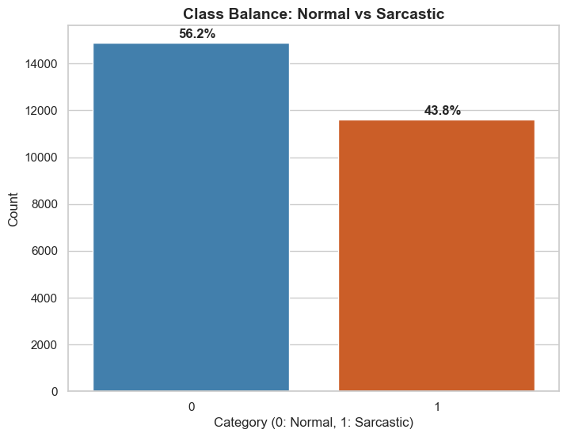
Fig 1 — Class balance in the news headlines dataset
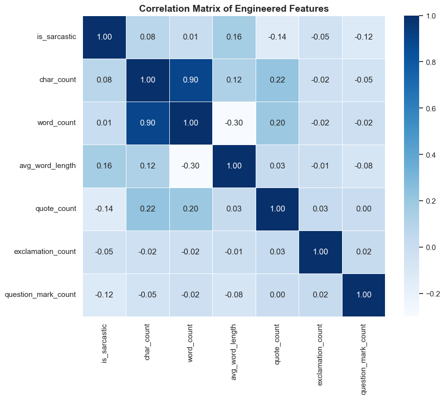
Fig 2 — Correlation between structural features and sarcasm label (news headlines dataset)
We frame sarcasm detection as a binary classification task: given a text, predict whether it is sarcastic (1) or normal (0). We deliberately chose classical machine learning methods — not deep learning — to understand which features and model types carry the most signal, and to keep results interpretable and reproducible.
We experiment with five different ways of representing each text as numbers:
The 6 structural features extracted during preprocessing: character count, word count, average word length, quote count, exclamation count, question mark count. These capture writing style — how something is written.
Each unique word in the vocabulary becomes a column. The value is the word's frequency in that text, adjusted for how rare the word is across all texts (this is called TF-IDF weighting). Captures what is said.
Combines single-word frequency with the 6 stylistic features. This is our richest feature set and the best performer overall.
Instead of single words, we count pairs of consecutive words (e.g. "area man", "study finds"). Word pairs capture some local context that single words miss.
Combines single words and word pairs in the same feature matrix. Tests whether adding word pairs on top of single words provides meaningful additional signal.
We train three different models on each feature set, chosen to represent different approaches to classification:
A linear model that assigns a weight to each feature and predicts the probability of sarcasm. Fast, interpretable (we can read which words matter most), and well-suited to high-dimensional word frequency data. We use this for leakage analysis because its weights are directly readable.
Finds the widest possible boundary between sarcastic and normal texts in feature space. Linear SVMs are particularly effective for high-dimensional sparse data like word frequencies, often matching or slightly improving on Logistic Regression.
An ensemble of decision trees, each trained on a random subset of features. Unlike the linear models above, Random Forest can capture non-linear relationships. We include it especially to test stylistic features, where its tree-based structure handles numerical data naturally.
| Step | Method | Purpose | Result |
|---|---|---|---|
| Model selection | Nested Cross-Validation (on train set) | Which model and parameters? | CV F1: 0.779 |
| Final proof | Held-out 20% test set | How well does it truly generalise? | Test F1: 0.787 |
| Metric | What it measures | Range |
|---|---|---|
| F1 Score | Harmonic mean of precision and recall — the main metric we use because the dataset is not perfectly balanced | 0–1 (higher = better) |
| Accuracy | Percentage of texts correctly classified (both sarcastic and normal) | 0–100% |
| AUC | Area Under the ROC Curve — how well the model ranks sarcastic texts above normal ones across all possible thresholds | 0–1 (0.5 = random guessing) |
| Precision | Of all texts predicted as sarcastic, how many actually were? | 0–1 |
| Recall | Of all actually sarcastic texts, how many did the model catch? | 0–1 |
We start by building baseline models on news headlines only. This answers our three research questions and establishes a performance ceiling — before we discover the leakage problem in Step 2.
We train all three models (Logistic Regression, Linear SVM, Random Forest) on five feature sets on the news headlines dataset using 5-Fold Cross-Validation. This tells us which feature type carries a stronger sarcasm signal within a single domain. We then test the same models on forum comments (an unseen domain) to see which features generalise better.
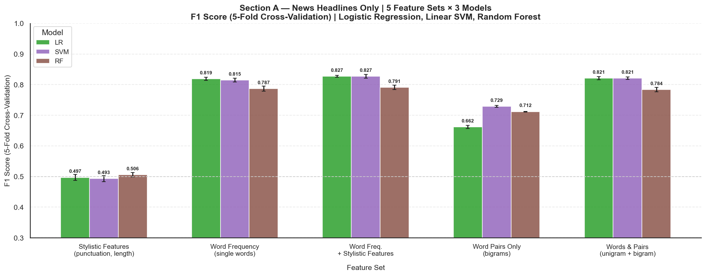
Fig 3 — F1 Score by feature set and model | News Headlines | 5-Fold Cross-Validation
| Feature Set | LR F1 | SVM F1 | RF F1 |
|---|---|---|---|
| Stylistic Features (punctuation, length) | 0.497 | 0.493 | 0.506 |
| Word Frequency (single words) | 0.819 | 0.815 | 0.787 |
| Word Frequency + Stylistic Features | 0.827 | 0.827 | 0.791 |
| Word Pairs Only | 0.662 | 0.729 | 0.712 |
| Words & Pairs | 0.821 | 0.821 | 0.784 |
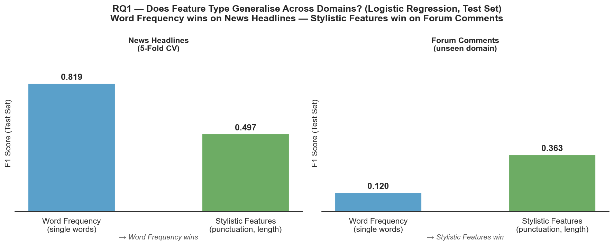
Fig 4 — Word Frequency vs Stylistic Features: performance on News Headlines vs Forum Comments | Logistic Regression | Test Set F1
We apply two widely-used sentiment analysis tools — VADER and TextBlob — to both datasets separately. Both tools work by assigning positive or negative scores to individual words and aggregating them to produce an overall sentiment score. We measure the "misleading rate": the percentage of genuinely sarcastic texts that each tool incorrectly scores as positive.
We also examine the distribution of sentiment scores and measure how often inherently positive words ("great", "amazing", "wonderful") appear in sarcastic vs normal texts.
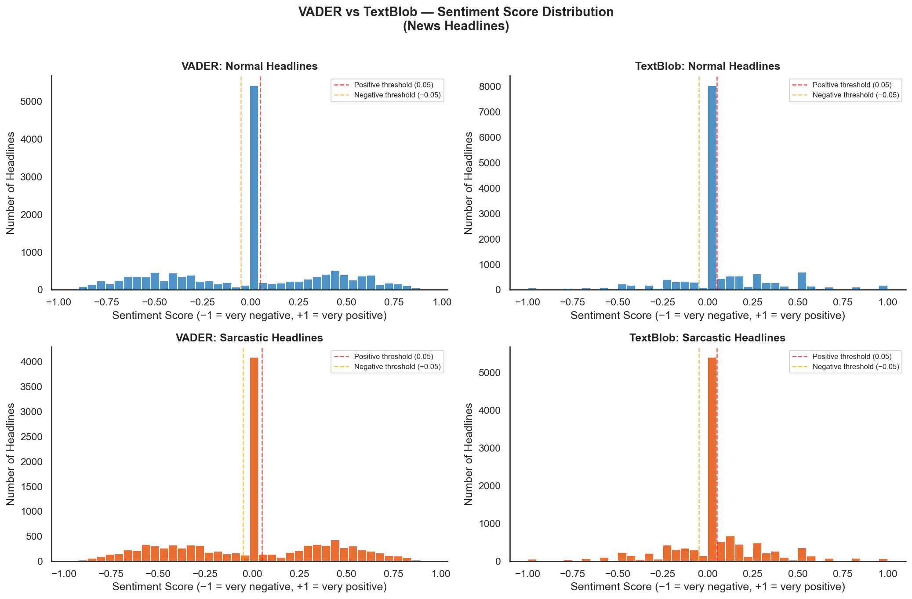
Fig 5 — Sentiment score distributions for normal vs sarcastic headlines | VADER and TextBlob
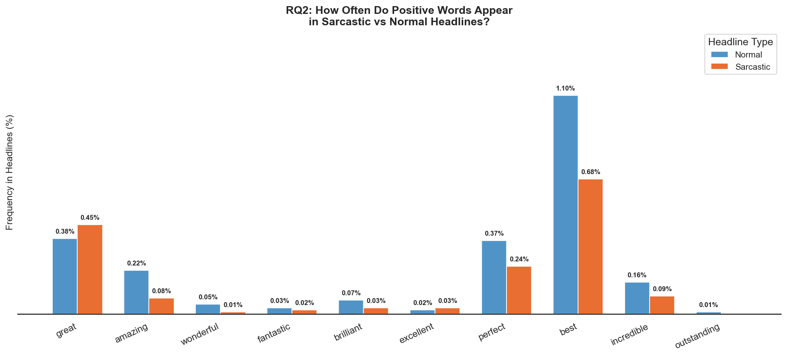
Fig 6 — How often positive words appear in sarcastic vs normal headlines
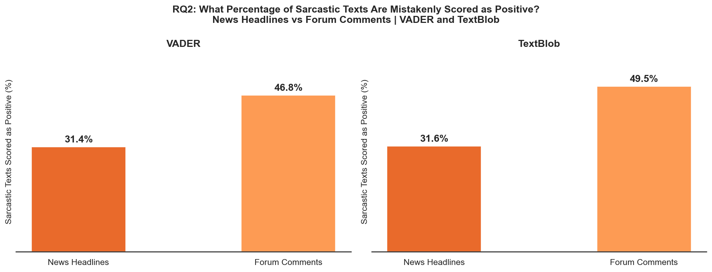
Fig 7 — Percentage of sarcastic texts mistakenly scored as positive | News Headlines vs Forum Comments
The misleading rate is substantially higher for forum comments (VADER: 46.8%, TextBlob: 49.5%) than for news headlines (VADER: 31.4%, TextBlob: 31.6%). There are two reasons for this:
We compare three word-frequency configurations: single words only, word pairs only, and both combined. All three are tested with all three models on both datasets. Word pairs capture local context that single words miss — for example, "area man" is a much stronger sarcasm signal than "area" or "man" individually.
Why test word pairs? Sarcasm often relies on specific phrase patterns. The Onion famously uses templates like "Area Man Does X" or "Nation's [Group] Reports Y". If these patterns are informative, word pairs should outperform single words.
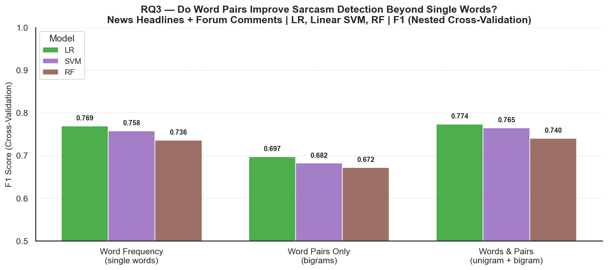
Fig 8 — Single words vs word pairs vs both combined | News Headlines + Forum Comments | F1 (Nested Cross-Validation)
| Feature Set | LR F1 (News) | SVM F1 (News) | RF F1 (News) |
|---|---|---|---|
| Word Frequency (single words) | 0.819 | 0.815 | 0.787 |
| Word Pairs Only | 0.662 | 0.729 | 0.712 |
| Words & Pairs (combined) | 0.821 | 0.821 | 0.784 |
The baseline achieved F1 = 0.827 on news headlines. Before moving on, we must ask: what did the model actually learn? The answer reveals a critical problem — and motivates everything in Steps 3 and 4.
After achieving strong results on news headlines (F1: 0.827), we investigated what the model actually learned. The answer was unexpected — and revealed a fundamental problem with training on single-source data.
Logistic Regression assigns a numerical weight (coefficient) to every word in its vocabulary. A high positive coefficient means the word strongly predicts sarcasm; a high negative coefficient means the word strongly predicts normal content. By reading the top coefficients, we can see exactly which words the model treats as sarcasm signals.
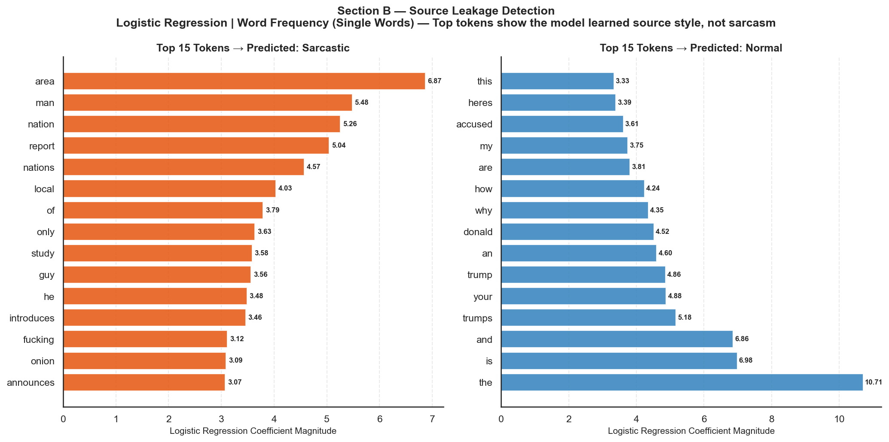
Fig 9 — Words with the highest weights in the Logistic Regression model | Word Frequency (Single Words) feature set
Seeing "onion" in the top tokens is suspicious, but it could be coincidental. Perhaps "onion" genuinely co-occurs with sarcasm for linguistic reasons we haven't considered. The coefficient analysis gives us a strong hypothesis — but a hypothesis is not proof. We need a proper test.
If the model learned genuine sarcasm signals, it should work on any sarcastic text — not just The Onion's headlines. So we tested it on the forum comments dataset, which the model had never seen and which has no connection to The Onion.
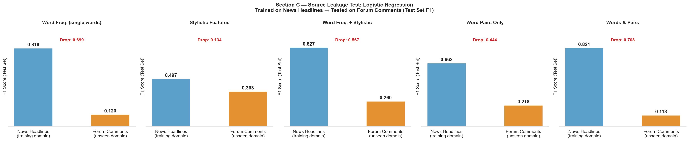
Fig 10 — F1 Score on News Headlines vs Forum Comments | Logistic Regression trained on news, tested on forum | Test Set F1
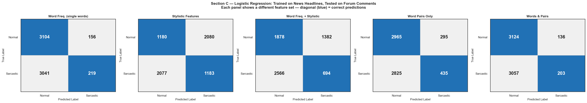
Fig 11 — Confusion matrices on Forum Comments for each feature set | Logistic Regression | Test Set
| Feature Set (Logistic Regression) | News F1 (CV) | Forum F1 (Test) | Drop |
|---|---|---|---|
| Word Frequency (single words) | 0.819 | 0.120 | −0.699 |
| Stylistic Features | 0.497 | 0.363 | −0.134 |
| Word Frequency + Stylistic | 0.827 | 0.260 | −0.567 |
| Word Pairs Only | 0.662 | 0.218 | −0.444 |
| Words & Pairs | 0.821 | 0.113 | −0.708 |
We know the news-only model learned The Onion's writing style. The fix: train on both domains simultaneously. A model that sees sarcasm from news headlines and forum comments can no longer rely on source-specific vocabulary — it must find signals that work in both.
To address the leakage problem, we combine both datasets — news headlines and forum comments — into a single training corpus. By seeing sarcasm from two very different domains, the model can no longer rely on source-specific vocabulary. It must find signals that work in both.
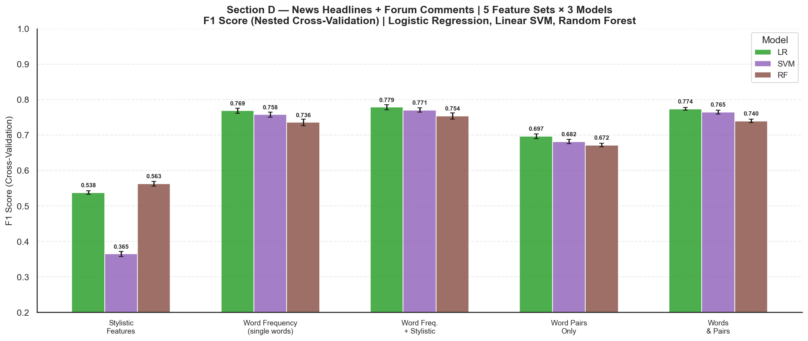
Fig 12 — F1 Score by feature set and model | News Headlines + Forum Comments | Nested Cross-Validation
| Feature Set | LR F1 | SVM F1 | RF F1 |
|---|---|---|---|
| Stylistic Features | 0.538 | 0.365 | 0.563 |
| Word Frequency (single words) | 0.769 | 0.758 | 0.736 |
| Word Frequency + Stylistic | 0.779 | 0.771 | 0.754 |
| Word Pairs Only | 0.697 | 0.682 | 0.672 |
| Words & Pairs | 0.774 | 0.765 | 0.740 |
The best model (Logistic Regression, Word Frequency + Stylistic Features) is evaluated exactly once on the 20% held-out test set.
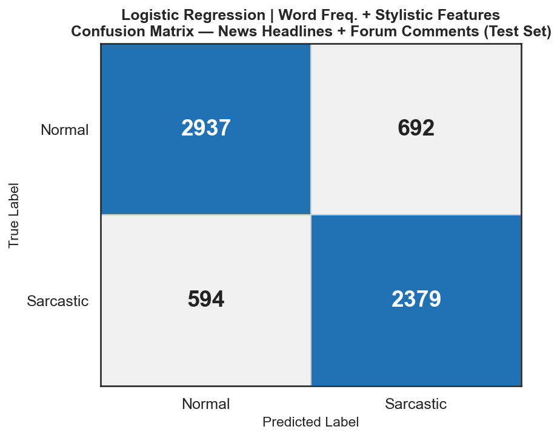
Fig 13 — Confusion matrix | Logistic Regression | Word Freq. + Stylistic Features | Test Set
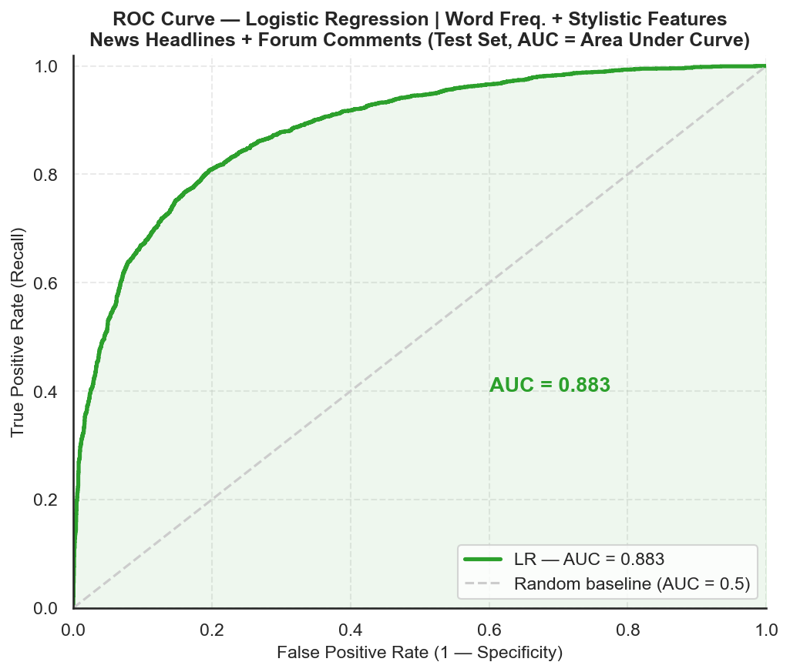
Fig 14 — ROC Curve | Logistic Regression | Word Freq. + Stylistic Features | Test Set (AUC = 0.883)
| Model | Precision | Recall | F1 | Accuracy | AUC |
|---|---|---|---|---|---|
| Logistic Regression | Word Freq. + Stylistic Features | 0.800 | 0.800 | 0.787 | 80.5% | 0.883 |
| Stage | Model | F1 | Note |
|---|---|---|---|
| News headlines baseline (Step 1) | LR | Word Freq. + Stylistic | 0.827 | 5-Fold CV — source leakage present |
| Leakage confirmed (Step 2) | LR | Word Frequency | 0.120 | Trained on news, tested on forum |
| Combined model (Step 3 — test set) | LR | Word Freq. + Stylistic | 0.787 | 20% held-out test, no leakage |
The combined model achieves F1 = 0.787 overall — but is this score equally good on news headlines and forum comments? We split the held-out test set by source and evaluate separately. None of these rows were seen during training.
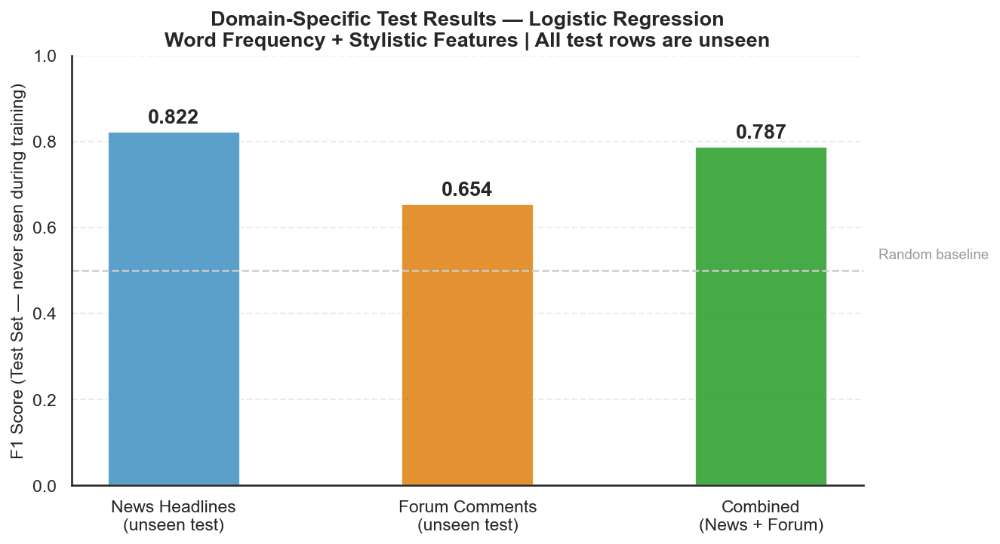
Fig 15 — F1 Score by domain | Logistic Regression | Word Freq. + Stylistic Features | Held-out test set (never seen during training)
| Test Set | F1 Score | Accuracy | Texts |
|---|---|---|---|
| News Headlines (unseen) | 0.822 | 83.9% | 5,310 |
| Forum Comments (unseen) | 0.654 | 66.7% | 1,292 |
| Combined (News + Forum) | 0.787 | 80.5% | 6,602 |
To test whether balancing training data closes the gap, we downsample news headlines to match the forum size (6,520 each) using stratified sampling — preserving the sarcastic/normal ratio. The train/test split is done after downsampling, so the test set was never seen during training.
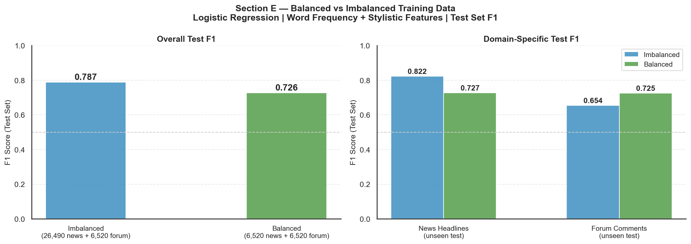
Fig 16 — Imbalanced (26,490 + 6,520) vs Balanced (6,520 + 6,520) training | Logistic Regression | Word Freq. + Stylistic Features | Test Set F1
| Training Data | Overall F1 | News F1 | Forum F1 | Accuracy |
|---|---|---|---|---|
| Imbalanced (26,490 news + 6,520 forum) | 0.787 | 0.822 | 0.654 | 80.5% |
| Balanced (6,520 news + 6,520 forum) | 0.726 | 0.727 | 0.725 | 73.6% |
git clone https://github.com/BILGI-IE-423/ie423-2025-2026-termproject-0xdeadbeef cd ie423-2025-2026-termproject-0xdeadbeef
pip install -r requirements.txt python -m textblob.download_corpora
python scripts/01_load_data.py python scripts/02_preprocess_data.py python scripts/03_basic_eda.py python scripts/04_sentiment_analysis.py python scripts/05_preprocess_gen.py python scripts/05b_combine_datasets.py python scripts/06_modeling.py
All figures are saved to visuals/figures/ and all tables to visuals/tables/. Every output shown on this page is produced by the scripts above — no manually placed images.